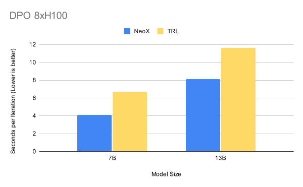
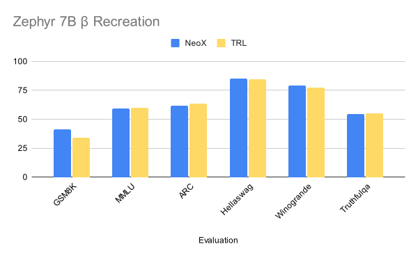

Today SynthLabs and EleutherAI are excited to announce large scale post training and preference learning in GPT-NeoX, one of the most widespread and adopted pretraining frameworks for large scale language models. This effort represents a partnership towards improving accessibility of preference learning research at scale.
Currently large scale preference learning research is bottlenecked by a lack of easily scalable and robust frameworks. Pushing the boundary of what models are easily trainable and what training methodologies are easily accessible will enable a new wave of research developments and breakthroughs in the space of preference learning as well as a new set of previously unknown applications, much likeas did the introduction of many of EleutherAI’s own prior open source models did.
This collaboration combines SynthLabs' expertise in preference learning—the same minds behind trlX, the first open-source library to implement scalable and easy to use RLHF techniques; #1 leaderboard-ranked models like StableBeluga; and StableVicuna, one of the first open-source models fine-tuned with RLHF—with EleutherAI's leadership in optimizing model training at scale.
Reinforcement Learning with Human Feedback (RLHF) is one of the most effective methods for aligning AI models with human preferences. It has been successfully applied to language models to improve their performance on tasks like summarization. RLHF and related approaches, often referred to collectively as preference learning, are now being implemented in real-world AI systems including but not limited to models like ChatGPT or more recently GPT-4.
Today, we introduce a number of methodologies implemented into GPT-NeoX for performing large-scale preference learning.
Firstly, we present an implementation of Direct Preference Optimization (DPO), first introduced in early 2023. DPO represents one of the most scalable and widely utilized preference learning algorithms due to its ease-of-use and overall training stability, including but not limited to models like llama 3 and its more recent derivative llama 3.1.
Secondly, we present an implementation of Kahneman-Tversky Optimization (KTO). KTO is a method designed to use binary rewards for preference learning, unlike the conventional pairwise-preference approaches found in other preference post-training approaches. For instance, in a point-of-sale chatbot, KTO can efficiently learn from simple "successful sale" or "no sale" outcomes, rather than comparing pairs of interactions.
Finally, we present functionality for training reward models as well as improved supervised finetuning within the GPT-NeoX library. We hope that enabling reward modeling training in NeoX in particular will open the door to large-scale reward modeling research. By "large-scale", we refer to massively parallel models, and distributed high performance computing.
Efficiency
GPT-NeoX builds on leading core technologies for large scale optimization including ZeRO, 3D parallelism, and flash attention and combines them with both novel HPC optimizations as well as support and out–of-the-box performance on a wide variety of GPUs (NVIDIA, AMD), model architectures (transformers, mixture-of-experts, Mamba, RWKV), interconnects (InfiniBand, Ethernet, Slingshot), and job launchers (Slurm, MPI, IBM Job Step Manager). Through maintaining performance across all combinations, GPT-NeoX has become a standard library for training large scale models deployed across a wide variety of academic and cloud systems.
By adding support for preference learning (SFT, DPO, KTO) into GPT-NeoX, we are able to exploit pretraining optimizations (both scale-up and scale-out) during the post-training process. This alleviates the efficiency bottleneck inherent to existing post-training libraries like TRL.

We use HuggingFace's hyperparameters from the alignment handbook repo for zephyr-7b-beta. 13B Seconds per iteration for TRL using 8 Gradient Accumulation Steps, batch size per device of 2, zero3, and gradient checkpointing enabled
In particular, we find that leveraging GPT-NeoX for post training provides a 30-40% speed-up compared to TRL at the 7B and 13B parameter scale. GPT-NeoX has been scaled to thousands of GPUs, and we expect similar performance improvements for preference learning on massive models and HPC systems.
Reproducibility + Release
To get started with preference learning techniques such as SFT, DPO, KTO, and Reward Modeling, please refer to our post-training folder in the repository. These examples will guide you through the process of applying the various methods to fine-tune models.
To verify our implementation, we've recreated the HuggingFaceH4/zephyr-7b-beta model using our DPO implementation. You can find our model here. Details on how we generated the data as well as the GPT-NeoX configuration can be found here.
To evaluate our model, we utilized the latest lm-evaluation-harness with vLLM:

| Average | GSM8k 5 shot flexible-extract | Mmlu 5 shot acc | ARC-Challenge 25 shot acc_norm | HellaSwag 10 shot acc_norm | WinoGrande 5 shot acc | TruthfulQA 0 shot Mc2 acc | |
|---|---|---|---|---|---|---|---|
| NeoX DPO from Zephyr-SFT | 63.5 | 41.1 | 59.4 | 61.7 | 85.0 | 79.0 | 54.6 |
| Zephy-7b-Beta | 62.5 | 34.3 | 59.8 | 63.6 | 84.4 | 77.6 | 55.1 |
SynthLabs Mission Statement
SynthLabs is a post-training AI research lab advancing and scaling synthetic reasoning. Our mission is to open and democratize new frontiers in post-training research, specializing in developing innovative preference learning techniques and optimizing the performance and alignment of foundation models. Through our ongoing collaboration with EleutherAI, we're making sophisticated AI techniques accessible, enabling a new era of large-scale, open science research. We're empowering academics and innovators to explore post-training research questions that were once the exclusive domain of large industry labs. As part of this commitment, we plan to implement various policy gradient approaches, including REINFORCE. Looking ahead, SynthLabs and EleutherAI aim to expand support for online reinforcement learning methodologies applicable to more complex, agentic environments. We intend to explore these topics, along with studying reward models at scale, within the GPT-NeoX framework. Going forward, EleutherAI and SynthLabs intend to explore the topics of online RL and studying reward models at scale within the framework of GPT-NeoX.
EleutherAI Mission Statement
EleutherAI is a world-renowned non-profit research lab specializing in large language models and natural language processing. We strive to lower the barrier of entry to doing research on large language models through providing accessible research infrastructure to train and evaluate large language models. By integrating preference learning functionality into our GPT-NeoX training library we enable our team, as well as the dozens of academic, small company, and government labs around the world who use GPT-NeoX, to easily work with this technology at massive scale. Open-sourcing scalable preference learning tools is another step towards ensuring the future of AI systems isn't solely determined by the most powerful for-profit companies.
EleutherAI looks forward to a fruitful partnership with SynthLabs, and is happy to engage with other like-minded individuals and organizations! If you would like to work with us or support our mission, please get in touch at contact@eleuther.ai
Future GPT-NeoX Tease
GPT-NeoX has been improving! We now have alpha implementations of the following: - AMD GPU support - Mixture-of-Experts (MoE) support - RWKV and Mamba support - Sequence parallelism
The implementation of preference learning is part of a broader push to improve the GPT-NeoX library and continue to power open research at scale on frontier HPC systems. Preference learning will be included in the upcoming GPT-NeoX 3.0 release, which includes stable versions of the above features.
To start working with early implementations of the above today, check out the GPT-NeoX repository!